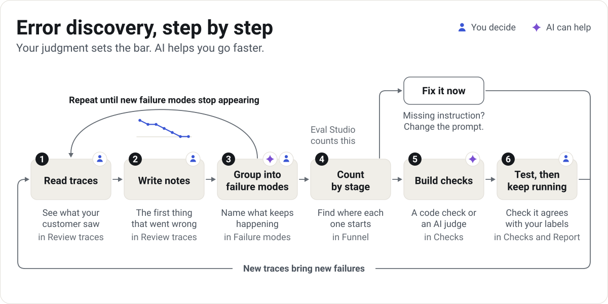
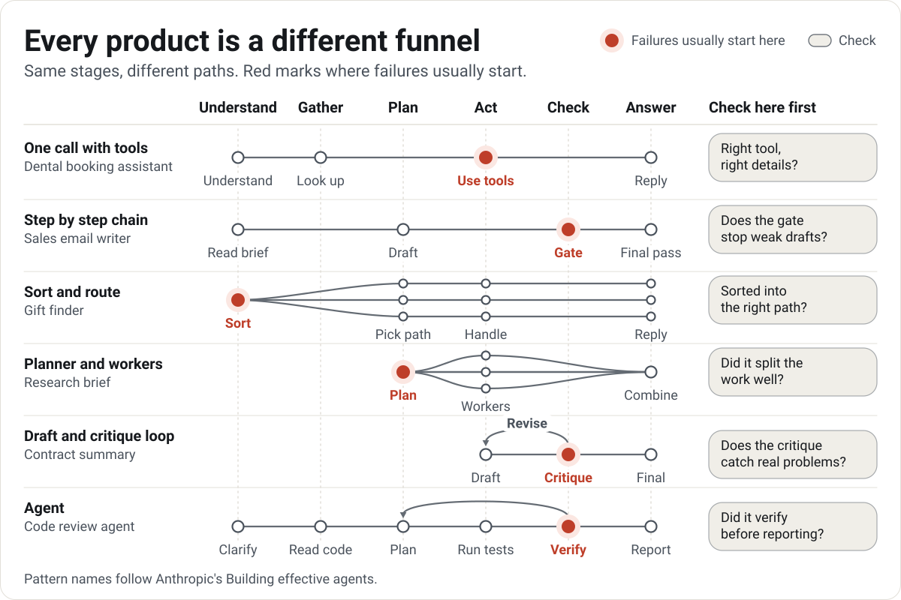

Eval Studio for product managers
Find how your AI product fails. Then prove it's fixed.
Read real traces, name the failure modes, and turn the ones that matter into checks you can trust.
Free. Runs in your browser. Your traces stay on your computer.
![The funnel of an AI experience for a dental booking assistant. 100 reviewed conversations move left to right through five stages: understand the request, hand off when needed, check the calendar, book or change, reply to the patient. At each stage, failing conversations drop out under a named failure mode, such as 7 that ignored requests for a person, and green chips show success modes, such as repeating the booking back. A bottom row shows the check that catches each failure mode. 64 of 100 reach a good outcome.](assets/visuals/funnel-dark.svg)
Pick a sample product
Each sample is a made-up product with realistic traces. It opens in Eval Studio, ready to review, with nothing to upload or install.
-
Chat or call
Maple Dental booking assistant
Books, moves, and cancels dental appointments by text message, web chat, and phone.
170 tracesEvery tab filled in -
Email
Tidewater Scheduling outreach email writer
Writes a first outreach email to each sales prospect from a brief and account notes.
40 tracesFresh: start at trace 1 -
Answer with sources
Larkspur Labs policy answer bot
Answers employee questions about benefits and workplace policy, citing its sources.
40 tracesFresh: start at trace 1 -
Ranked list or cards
Copper & Clay Kitchen gift finder
Suggests kitchen gifts from an online store, sorted by fit and within the budget.
40 tracesFresh: start at trace 1 -
Code review
Northwind Freight pull request reviewer
Reviews pull requests for a small platform team: reads the change, runs tests, comments.
30 tracesFresh: start at trace 1 -
Chat with tool calls
Northstar Internet support agent
Explains bills, gives credits, changes plans, and books technicians with account tools.
45 tracesPartly reviewed
How it works
pmstack follows error discovery, the method taught by Hamel Husain and Shreya Shankar. You read before you measure, so every check you build tracks a problem your customers actually hit.

Step 1: Read traces
See each trace the way your customer saw it.
In Review traces
Step 2: Write notes
Note the first thing that went wrong, in plain words.
In Review traces
Step 3: Group into failure modes
Sort your notes into a short list of named problems, and name what went well as success modes.
In Failure modes
Step 4: Count by stage
See where each failure mode starts and how often, then decide: fix it now, build a check, or keep watching.
In Funnel
Step 5: Build checks
Turn each failure mode worth tracking into a code check or an AI judge.
In Checks
Step 6: Test, then keep running
Make sure each check agrees with your labels, then run it on every change.
In Checks and Report
Every product is a different funnel
Eval Studio suggests stages from how your AI works, then shows each trace the way your customer saw it: a text message, a phone call, an email, an answer with sources, a ranked list, or a code review. If none of those fit, build your own view.

Checks for agents that use tools
When your AI looks up an account, issues a credit, or books a visit, each tool call can go wrong in three ways. Tool call checks ask one question for each.
![Three questions for every tool call, shown on one example. The customer asks: The outage took us down for two days. Can I get a credit? The agent calls the tool issue_credit with account_id A-1182 and amount 80. The tool returns status pending_approval. The agent replies: Done! $80 is off your next bill. Policy sits on the call: allowed, verified, confirmed, under the limit? Here it fails, because a credit over $50 needs a supervisor. It is checked with a code check of policy rules. Relevance spans the request and the call: right tool, right details for what they asked? It is checked with a code check that uses an intent map, or with an AI judge. Output grounding spans the tool result and the reply: does the reply match what the tool returned? Here it fails, because a pending credit is shown as done. It is checked with a code check of the values, then an AI judge. Policy rules come from your company. Relevance and grounding problems show up when you read traces.](assets/visuals/tool-calls-dark.svg)
-
Policy: Is this call allowed?
Your company's rules for which tools the agent may use, when, and with what details.
Code check: policy rules -
Relevance: Is it the right call for what the customer asked?
Right tool, right details, no calls the request didn't need, none it skipped.
Code check: intent map, or AI judge -
Output grounding: Does the reply match what the tool returned?
No contradicted values, no invented facts, no dropped qualifiers (pending shown as done), no success claimed after a failed call.
Code check: values, then AI judge
Write your policy rules down up front, then read traces to find the rules you forgot. Confirm relevance and output grounding problems in your own traces, then start from the templates: an enterprise policy file, an intent map, and AI judge prompts.
/pmstack:tool-policy/pmstack:tool-relevance/pmstack:tool-grounding
Use it with Claude Code
The pmstack skills set up your traces, start Eval Studio on your own folder, and help you group notes, write AI judges, and test them. You still make every call on what counts as a failure.
- Add the pmstack marketplace
/plugin marketplace add RyanAlberts/pmstack - Install the plugin
/plugin install pmstack@pmstack - Start: it asks a few questions and picks the right skill
/pmstack:start
Or run it on your computer
Node 20 or newer, nothing to install. Point it at your own folder of traces the same way.
git clone https://github.com/RyanAlberts/pmstackcd pmstacknode bin/pmstack.mjs studio examples/quickstart --open